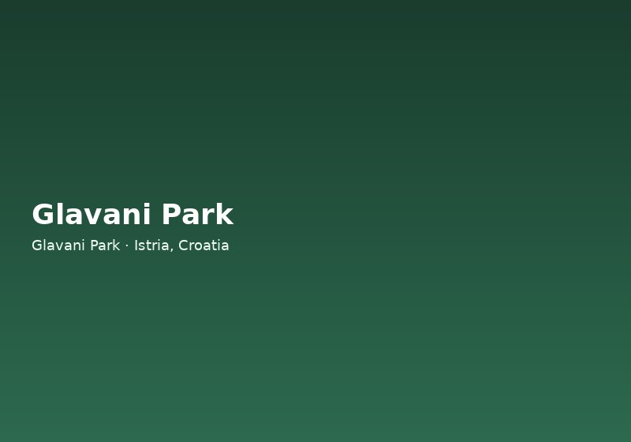

Why Istria Is One of Croatia's Most Versatile Destinations
Istria occupies a triangular peninsula at the northern edge of the Adriatic, where Italian, Slavic, and Central European influences blend into something uniquely its own. Visitors come for the coastline — Rovinj's pastel harbour, the rocky coves around Pula, and family-friendly beaches at Medulin and Premantura — but the inland landscape is equally compelling. Rolling hills covered in vineyards and olive groves lead to fortified villages like Motovun and Grožnjan, while truffle forests and farm-to-table restaurants make food tourism a reason to visit in its own right.
Whether you are planning a week-long family holiday or a long weekend from Trieste, Ljubljana, or Zagreb, Istria packs an unusual density of experiences into a compact area. Most major sights lie within a 45-minute drive of one another, which makes day trips effortless and allows you to combine culture, nature, and active adventure in a single itinerary. For travellers who want more than sun and sea, the peninsula offers hiking trails, cycling routes, wine roads, and some of the best outdoor adventure facilities in Croatia — including Glavani Park, an adrenaline park near the village of Glavani between Barban and Vodnjan.
Coastal Highlights: Pula, Rovinj, and the Adriatic
Pula is Istria's largest city and a natural starting point for exploring the region. Its Roman amphitheatre — one of the best preserved in the world — dominates the old town, while nearby Brijuni National Park offers island wildlife, dinosaur footprints, and clear swimming waters. Families often spend a morning at the arena or the Aquarium Pula before heading inland for an afternoon activity. If you are searching for things to do near Pula beyond the beach, the 30-minute drive to Glavani Park adds a high-energy counterpoint to a cultural morning in the city.
Rovinj, with its Venetian-style old town rising from the harbour, is Istria's most photographed destination. Climb the bell tower of St Euphemia's Church for panoramic views, wander the artists' studios in the cobbled lanes, and eat fresh seafood at waterfront trattorias. Rovinj sits roughly 45 minutes from Glavani Park by car, making a combined day — morning in town, afternoon on the ziplines — entirely feasible during the summer season.
Along the coast you will also find the Lim Fjord, a dramatic karst inlet ideal for boat trips and kayaking; the hilltop village of Vrsar; and the quiet beaches of the east coast around Rabac and Labin. Each offers a different pace, from bustling resort towns to secluded coves where pine trees shade the water's edge.
Inland Istria: Hill Towns, Wine, and Truffles
Turn inland from the coast and Istria reveals a softer, greener landscape. Medieval towns perch on hilltops above the Mirna River valley: Motovun hosts an international film festival and truffle-hunting experiences; Grožnjan has reinvented itself as a village of artists and galleries; and Hum, often cited as the world's smallest town, offers a charming stop on the Glagolitic Alley cultural trail.
Wine lovers should follow the Istrian wine road, sampling Malvazija whites and Teran reds at family-run cellars. Olive oil routes and agritourism farms provide tastings of Istria's other flagship products. Many visitors schedule a truffle lunch in Livade or Buzet, then drive south to Barban and Glavani Park for an active afternoon in the forest.
The area around Barban and Vodnjan is less crowded than the coast but rich in authenticity. Vodnjan's parish church houses mummified saints and one of the tallest bell towers in Istria, while Barban's medieval walls and local konobas serve hearty Istrian fare. Glavani Park sits on the road between these two communities at Glavani 10, with free parking and opening hours from 9 AM to 5 PM daily (last entry at 3 PM).
Outdoor and Active Things to Do in Istria
Active travellers have no shortage of options. Cycling is popular along the Parenzana trail, a converted railway line linking Trieste with coastal Istria. Hikers explore Učka Nature Park at the peninsula's southern edge, where marked paths climb through beech forest to viewpoints over Kvarner Bay. Rock climbers head to Dvigrad or Lim Bay, while kayakers paddle the coast from Pula to Kamenjak Nature Park.
For structured adventure with professional safety equipment and trained instructors, Glavani Park stands out as one of the largest dedicated adrenaline parks in Croatia. Spread across 1.5 hectares of oak forest, the park features three certified high-ropes routes (yellow at 2 m, blue at 6 m, and black at 10 m), a 120-metre zipline, a 12.5-metre high swing, a human catapult, a 20-metre Quick Jump, and an outdoor climbing wall. It is ideal for families, couples, and groups who want a guaranteed half-day or full-day of activity without organising equipment themselves.
Visitors often pair Glavani Park with other regional highlights: a morning at the park followed by an afternoon in Vodnjan or Barban; or a coastal morning in Pula and an adrenaline afternoon before returning to their accommodation. Call +385 91 896 4525 in advance to check availability, especially during July and August.
Planning Your Istria Itinerary with Glavani Park
A well-balanced Istria itinerary might look like this: Day one — explore Pula's Roman heritage and swim at Kamenjak. Day two — Rovinj old town and a sunset dinner on the harbour. Day three — truffle experience or wine tasting inland, then Glavani Park for family activities and ziplines. Day four — Brijuni boat trip or a lazy beach day before departure.
Glavani Park is open daily from 9 AM to 5 PM with last entry at 3 PM — allow three to four hours to enjoy the main attractions comfortably. From the end of September until the start of July, all visits require advance booking; walk-ins are not accepted. From July through the end of September, walk-ins may be accepted during opening hours (9 AM–5 PM, last entry 3 PM), subject to availability — book in advance to guarantee your slot and avoid disappointment. English-speaking staff are on hand throughout the season, and the park is listed by the Istria Tourist Board as one of the region's recommended outdoor attractions.
Whether your priority is culture, cuisine, coastline, or adrenaline, Istria delivers — and Glavani Park adds an unforgettable active dimension to any trip. Browse our dedicated guides on ziplines in Croatia, adventure parks, and day trips from Pula to plan the perfect visit.